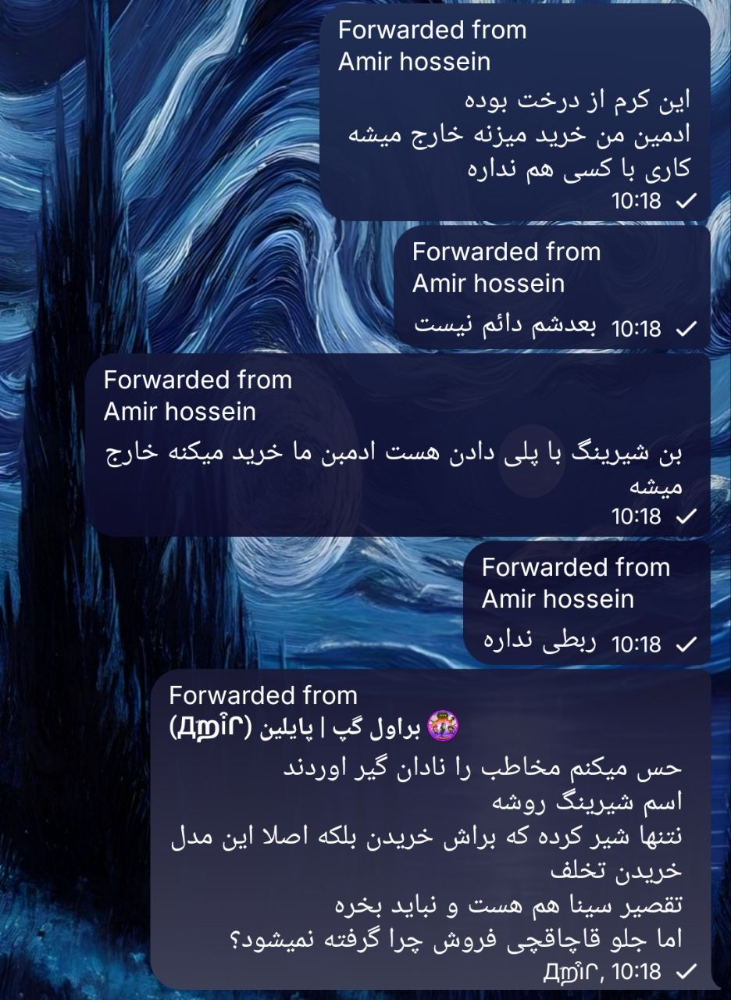
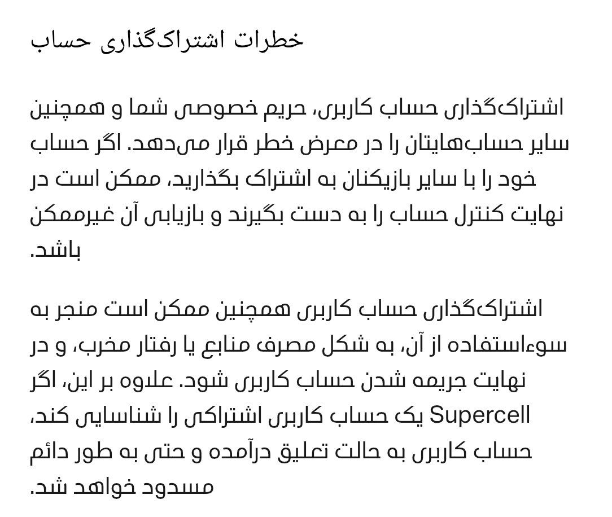

نویک جم: آیا در صورت بروز مشکل، فروشنده حاضر به جبران خسارت است؟
پاسخ کوتاه: در اکثر موارد، خیر.
بر اساس مستندات جمعآوریشده، فروشندگان خدمات بازی از جمله نویک جم در صورت بروز مشکل برای اکانت مشتری، از ضمانتهایی که هنگام خرید دادهاند شانه خالی میکنند، با بهانههای مختلف مسئولیت را نمیپذیرند و مشتری را بلاک میکنند.
چرا فروشندگان جبران نمیکنند؟
- عدم امکان اثبات مشکلات بازیهای خارجی: بن شدن و جم منفی یا ریفاند در ایران قابل اثبات و پیگیری قضایی نیست و فروشنده از این موضوع آگاه است.
- عدم نظارت قانونی: فروشندگان غیررسمی فاقد مجوز قانونی (اینماد معتبر) هستند و هیچ نهادی بر آنها نظارت نمیکند. بهعنوان مثال، طبق مستندات، اینماد نویک جم مربوط به فروش لوازم جانبی بوده، نه فروش جم.
- اولویت سود بر مسئولیت: هدف اصلی این فروشندگان حداکثر سود خودشان است، نه رضایت مشتری. جبران خسارت سود آنها را کاهش میدهد.
- ضعف موقعیت کاربر: کاربر ایرانی به دلیل تحریم، راهی برای اعتراض رسمی ندارد و نمیتواند از فروشنده شکایت کند.
تنها استثنا: خطر خدشهدار شدن اعتبار برند
تنها در یک صورت فروشنده حاضر به جبران خسارت میشود: زمانی که اعتبار برندش در معرض خطر جدی قرار بگیرد. اگر مستندات بن شدن اکانتها در سطح گسترده منتشر شود و برند فروشنده در خطر باشد، ممکن است برای حفظ ظاهر، خسارت را جبران کند.
نمونهای از بهانهآوری
در مستندات ارائهشده، نمونهای از بهانهآوردن نویک جم برای اکانتی دیده میشود که به دلیل شیرینگ مسدود شده است. در این مورد، فروشنده بهجای پذیرش مسئولیت، تقصیر را به گردن مشتری انداخته و از جبران خسارت خودداری کرده است.

